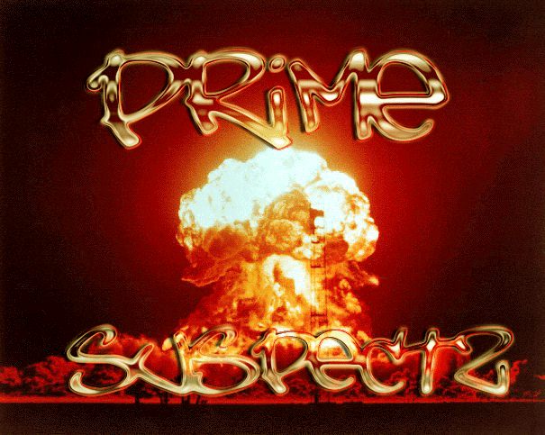

prime suspectz ownz
Departamento nacional de Planeacion
~~~~~~~
PEDAÇO DE NÓS
Nos mares figuras com olhares estranhos,
Recebem o que colhem e o que pagam.
Não podemos ver o sol distante,
Quero te ver mas te encho o saco.
Viver éh morrer: que esquisito,
Nada vemos por ver precisamos chorar,
Os cantos das aves vão ao longe, monge...
Não posso querer ter você, fui iludido pela ilusão de amar.
Quero perceber o momento sem vivê-lo
Não posso usar o não pelo sim.
Você é somente pronome não minha vida,
Sou mais do que pronome, sou o mundo,
Vasos quebrados não grudam falta bonder,
Chuvas que caem voltam a cair,
Água passadas voltam quando menos esperamos,
Nossa angústias nos afoga.
Horizonte perdido, olhar desiludido,
Porque mentir se a verdade dói mais,
Gostamos de sofrer as dores que não temos,
Pois o vento não sopra em nossa direção.
A paz é a guerra cansada de ser,
A paz é a guerra cansada,
A guerra é a paz cansada de ser,
O ser, o não ser que somos,
Que pensamos poder amar, só queremos odiar,
Vagabundas dão prazer e transa,
Você transa por prazer e diz: te amo,
Um objeto não tem vida você o mata,
Não és forte o suficiente para uma barata,
Ilusões são sonhos acordados,
Quando dormimos ficamos decepcionados.
A pureza da criança está na idade,
Chega a velhice, fatalidade,
Homens corrompem a sociedade,
Mancham seu manto branco de sangue,
Sede de poder, de não poder,
Fome de comer sem ser comido,
Pergunto: como vai? Tenho marido...
A necessidade de demonstrar nos afoga,
Chega de mentir para si mesmo,
Liberte-se o cão chegará atrás do osso,
Humanos famintos, agora gulosos,
Prender bandidos não resolve,
Eles já estão cansados, vida mole.
Planetas distantes podem ser melhores,
Quando pensamos nos piores lembramos de nós,
Sabemos o erro, não entendo a não mudança,
Parece que a contradição e a mais forte emoção.
Tapera de matos mortos com sepulcro,
Magia negra é ser branco e Ter orgulho,
Calçados furados são sinais de caminhada,
Pobreza pra ricos é morte traçada,
Como se ricos não morressem, fossem eternos...
Vai faltar lugar ou vai faltar infernos?
O sal é água transformada,
Gritos são bocas cansadas,
Vivos são os que conseguem sobreviver,
Morte é o fim do que plantamos,
no inferno de nós mesmos,
Onde não existe impostos nem taxas de CPM.
___
/ o O \
( ^ )
U
Adm:
can be glad!.. nada foi deletado..
apenas renomeado!.. troke esse teu windocê..
recomendamos hum apache!!
Greetz: McM4nus, Insanity Zine, Crime boys,
the-magic, mark,
᜔wᄛk, elitehacker.com.br, submundohacker.com
Fuckz: pra q? naum temos inimigos!..
prime suspectz is
k4µ1k4z3 - x-s4nd3r - óvërk¡££ - AnIcLaToR
psuspectz@mail.com